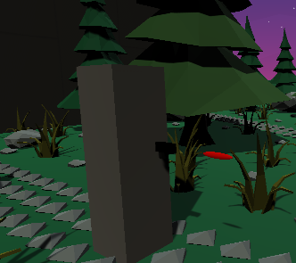
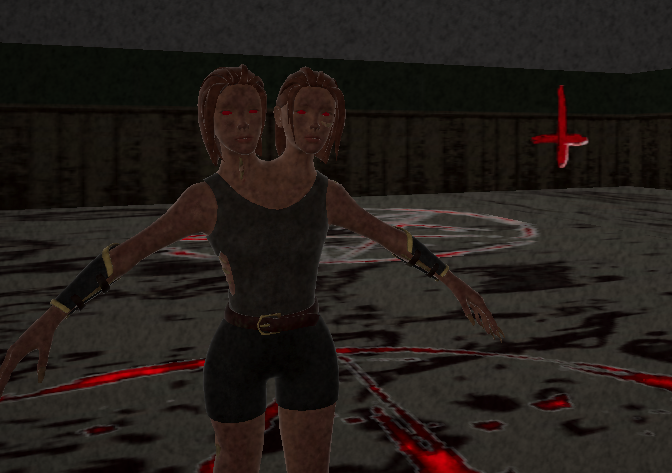
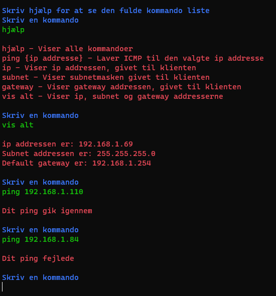

CubeAttack
CubeAttack er ikke det smukkeste spil. Det er et VR-spil, som jeg lavede sidst på året i 10. klasse. Vi fik en low-poly pack i klassen, som vi kunne bruge til vores spil. Man har et lyssværd, og man kan enten skære enemies over eller bruge deres skud og skyde dem tilbage med lyssværdet. Det er ikke så godt som det lyder, jeg ville kunne lave det bedre nu.

Sally House
Sally House er et spil med en demon, som du skal undslippe fra. Du er fanget i hendes hus og skal prøve at flygte ved hjælp af genstande, som er i tilfældige områder på banen. Spillet blev aldrig udgivet, da jeg blev træt af projektet, men der er ikke meget arbejde tilbage.
